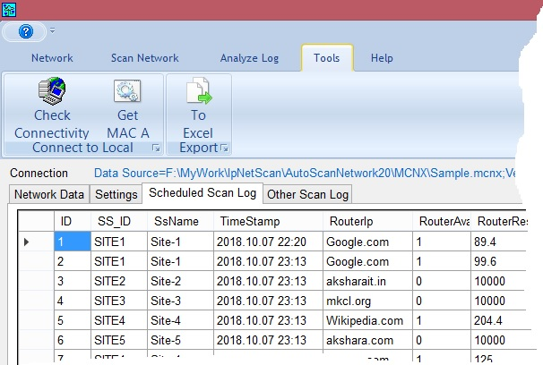

Connection Checking: We can confirm that whether computer on which this application is running is get connected to the network. When we click on this button then application askes for address to which ping trial to be taken and after performing ping trial with that location gives result. For example if my network is internet then for Google.com I should get success message.
Get MAC address: For automatically setting the network settings for the computer MAC address of that particular IP port is essential which can be get by using this button.
Export to Excel: The data of scheduled scan log get exported to Excel. Then application user can save this file to desired location for further use.